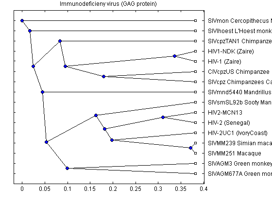
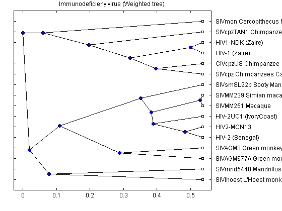
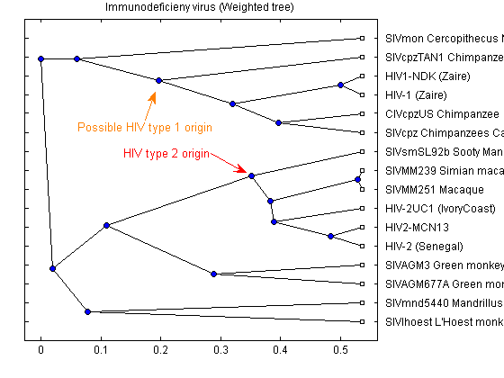

This demonstration shows how to construct phylogenetic trees from multiple strains of the HIV and SIV viruses.
Mutations accumulate in the genomes of pathogens, in this case the human/simian immunodeficiency virus, during the spread of an infection. This information can be used to study the history of transmission events, and also as evidence for the origins of the different viral strains.
There are two characterized strains of human AIDS viruses: type 1 (HIV-1) and type 2 (HIV-2). Both strains represent cross-species infections. The primate reservoir of HIV-2 has been clearly identified as the sooty mangabey (Cercocebus atys). The origin of HIV-1 is believed to be the common chimpanzee (Pan troglodytes).
References: "Origin of HIV-1 in the chimpanzee Pan troglodytes troglodytes" Nature 397(6718), 436-41 (1999) "Comparison of simian immunodeficiency virus isolates" Nature 331(6157), 619-622 (1988) "Genetic variability of the AIDS virus: nucleotide sequence analysis" of two isolates from African patients. Cell 46 (1), 63-74 (1986)
In this example, the variations in three longest coding regions from seventeen different isolated strains of the Human and Simian immunodeficiency virus are used to construct a phylogentic tree. The sequences for these virus strains can be retrieved from GenBank using their accession numbers. The three coding regions of interest, the gag protein, the pol polyprotein and the envelope polyprotein precursor, can then be extracted from the sequences using the CDS information in the GenBank records.
% Description Accession CDS:gag/pol/env data = {'HIV-1 (Zaire)' 'K03454' [1 2 8] ; 'HIV1-NDK (Zaire)' 'M27323' [1 2 8] ; 'HIV-2 (Senegal)' 'M15390' [1 2 8] ; 'HIV2-MCN13' 'AY509259' [1 2 8] ; 'HIV-2UC1 (IvoryCoast)' 'L07625' [1 2 8] ; 'SIVMM251 Macaque' 'M19499' [1 2 8] ; 'SIVAGM677A Green monkey' 'M58410' [1 2 7] ; 'SIVlhoest L''Hoest monkeys' 'AF075269' [1 2 7] ; 'SIVcpz Chimpanzees Cameroon' 'AF115393' [1 2 8] ; 'SIVmnd5440 Mandrillus sphinx' 'AY159322' [1 2 8] ; 'SIVAGM3 Green monkeys' 'M30931' [1 2 7] ; 'SIVMM239 Simian macaque' 'M33262' [1 2 8] ; 'CIVcpzUS Chimpanzee' 'AF103818' [1 2 8] ; 'SIVmon Cercopithecus Monkeys' 'AY340701' [1 2 8] ; 'SIVcpzTAN1 Chimpanzee' 'AF447763' [1 2 8] ; 'SIVsmSL92b Sooty Mangabey' 'AF334679' [1 2 8] ; }; numViruses = size(data,1)
numViruses =
16
You can use the getgenbank function to copy the data from GenBank into a structure in MATLAB. The SearchURL field of the structure contains the address of the actual GenBank record. You can access this record using the web command.
acc_num = data{1,2}
seqs_hiv = getgenbank(acc_num)
web(seqs_hiv(1).SearchURL)
acc_num =
K03454
seqs_hiv =
LocusName: 'HIVELICG'
LocusSequenceLength: '9176'
LocusNumberofStrands: ''
LocusTopology: 'linear'
LocusMoleculeType: 'DNA'
LocusGenBankDivision: 'VRL'
LocusModificationDate: '27-FEB-2002'
Definition: [1x66 char]
Accession: 'K03454 X04414'
Version: 'K03454.1'
GI: '326675'
Keywords: []
Segment: []
Source: 'Human immunodeficiency virus 1 (HIV-1)'
SourceOrganism: [3x59 char]
Reference: {[1x1 struct]}
Comment: [1x56 char]
Features: [128x74 char]
CDS: [9x4 double]
Sequence: [1x9176 char]
SearchURL: [1x105 char]
RetrieveURL: [1x95 char]
Retrieve the sequence information from the NCBI GenBank database for the rest of the accession numbers.
for ind = 2:numViruses seqs_hiv(ind) = getgenbank(data{ind,2}); end
Extract CDS for the GAG, POL, and ENV coding regions. Then extract the nucleotide sequences using the CDS pointers.
for ind = 1:numViruses temp_seq = seqs_hiv(ind).Sequence; temp_seq = regexprep(temp_seq,'[nry]','a'); CDSs = seqs_hiv(ind).CDS(data{ind,3},:); gag(ind).Sequence = temp_seq(CDSs(1,1):CDSs(1,2)); pol(ind).Sequence = temp_seq(CDSs(2,1):CDSs(2,2)); env(ind).Sequence = temp_seq(CDSs(3,1):CDSs(3,2)); end
The seqpdist and seqlinkage commands are used to construct a phylogenetic tree for the GAG coding region using the 'Tajima-Nei' method to measure the distance between the sequences and the unweighted pair group method using arithmetic averages, or 'UPGMA' method, for the hierarchical clustering. The 'Tajima-Nei' method is only defined for nucleotides, therefore nucleotide sequences are used rather than the translated amino acid sequences. The distance calculation may take quite a few minutes as it is very computationally intensive.
gagd = seqpdist(gag,'method','Tajima-Nei','Alphabet','NT','indel','pair'); gagtree = seqlinkage(gagd,'UPGMA',data(:,1)) plot(gagtree,'type','cladogram'); title('Immunodeficieny virus (GAG protein)')
Phylogenetic tree object with 16 leaves (15 branches)
Next construct a phylogenetic tree for the POL polyproteins using the 'Jukes-Cantor' method to measure distance between sequences and the weighted pair group method using arithmetic averages, or 'WPGMA' method, for the hierarchical clustering. The 'Jukes-Cantor' method is defined for amino-acids sequences, which, being significantly shorter than the corresponding nucleotide sequences, means that the calculation of the pairwise distances will be significantly faster.
% Convert nucleotide sequences to amino acid sequences using *nt2aa*. for ind = 1:numViruses aagag(ind).Sequence = nt2aa(gag(ind).Sequence); aapol(ind).Sequence = nt2aa(pol(ind).Sequence); aaenv(ind).Sequence = nt2aa(env(ind).Sequence); end % Calculate the distance and linkage, and then generate the tree. pold = seqpdist(aapol,'method','Jukes-Cantor','indel','pair'); poltree = seqlinkage(pold,'WPGMA',data(:,1)) plot(poltree,'type','cladogram'); title('Immunodeficieny virus (POL polyprotein)')
Phylogenetic tree object with 16 leaves (15 branches)
Construct a phylogenetic tree for the ENV polyproteins using the normalized pairwise alignment scores as distances between sequences and the 'UPGMA', method for hierarchical clustering.
envd = seqpdist(aaenv,'method','Alignment','indel','score',... 'ScoringMatrix','Blosum62'); envtree = seqlinkage(envd,'UPGMA',data(:,1)) plot(envtree,'type','cladogram'); title('Immunodeficieny virus (ENV polyprotein)')
Phylogenetic tree object with 16 leaves (15 branches)

The three trees are similar but there are some interesting differences. For example in the POL tree, the 'SIVmnd5440 Mandrillus sphinx' sequence is placed close to the HIV-1 strains, but in the ENV tree it is shown as being very distant to the HIV-1 sequences. Given that the three trees show slightly different results, a consensus tree using all three regions, may give better general information about the complete viruses. A consensus tree can be built using a weighted average of the three trees.
weights = [sum(gagd) sum(pold) sum(envd)]; weights = weights / sum(weights); dist = gagd .* weights(1) + pold .* weights(2) + envd .* weights(3);
Note that different metrics were used in the calculation of the pairwise distances. This could bias the consensus tree. You may wish to recalculate the distances for the three regions using the same metric to get an unbiased tree.
tree_hiv = seqlinkage(dist,'average',data(:,1)); plot(tree_hiv,'type','cladogram'); title('Immunodeficieny virus (Weighted tree)')
The phylogenetic tree resulting from our analysis illustrates the presence of two clusters and some other isolated strains. The most compact custer includes all the HIV2 samples; at the top branch of this cluster we observe the sooty mangabey which has been identified as the origin of this lentivirus in humans. The cluster containing the HIV1 strain, however is not as compact as the HIV2 cluster. From the tree it appears that the Chimpanzee is the source of HIV1, however, the origin of the cross-species transmission to humans is still a matter of debate amongst HIV researchers.
% Add annotations annotation1 = annotation(gcf,'textarrow',[0.2875 0.3089],[0.681 0.7571],... 'Color',[1 0.5 0],'String',{'Possible HIV type 1 origin'},... 'TextColor',[1 0.5 0]); annotation(gcf,'textarrow',[0.4196 0.4893],[0.5929 0.5405],... 'Color',[1 0 0],'String',{'HIV type 2 origin'},'TextColor',[1 0 0]);